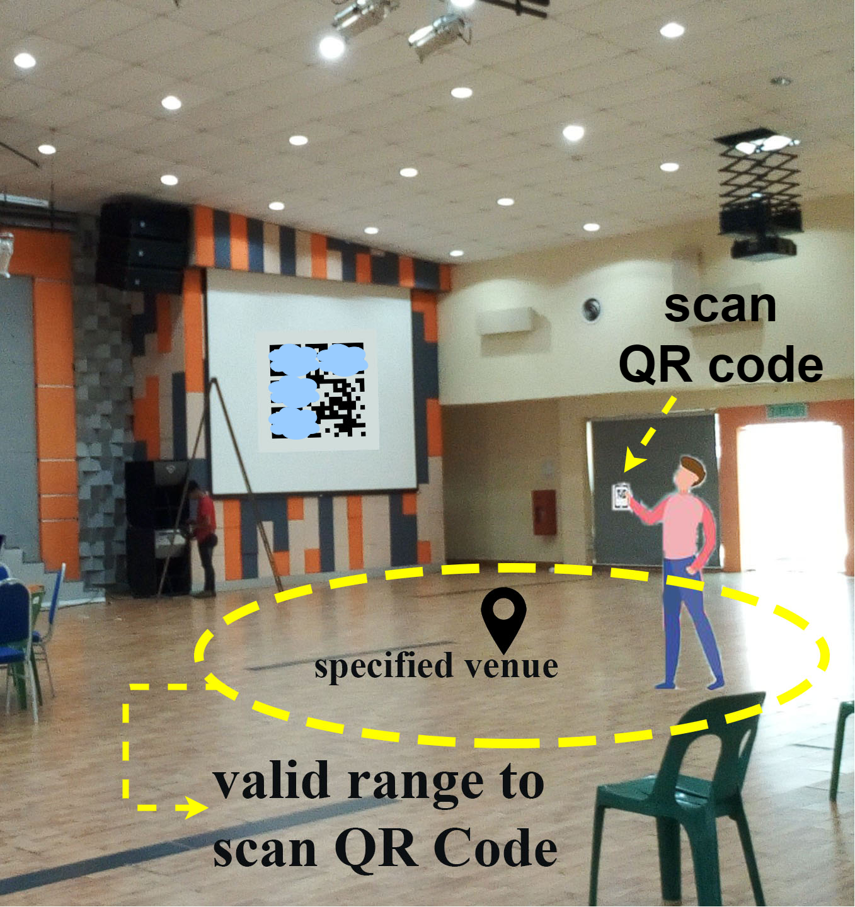

|  |
EventAIO
|
To ensure events to hold as planned, safeguard the flow of the event, increase participants’ satisfaction level, and deliver a unique experience to the participants, a suitable and good event management system is required. EventAIO is an application developed with the aim to provide a more convenient way for event organizer in managing event and deliver a better experience for participants during event check-in process. The target user for the application are students and staff from Malaysia university.
1. Intranet web-based event management system: Difficult in urgent update of information due to unreacheable organization’s private network.
2. Manual check-in:
‣ Unexpected damage on the submitted form (eg: the information on the form is blurred by water)
‣ Check-in form missing
‣ Human error (eg: spelling) during data entry due to vast amount of information to be key-in for record
‣ Time consuming to queue and wait for the turn to check-in at the counter
3. Fake attendance: Not attending event yet request other participants to help them to check-in or submit check-in form
1. Scan QR code: Fake attendance by requesting QR code from participants and scan to check-in without attending the event since participants’ location is not tracked.
2. Face recognition:
‣ Performance is influenced by several factors, including quality or resolution of collected photos, image capture conditions, and individual’s posture
‣ Challenges remain in recognising twins and face having different accessories such as glasses and beard.
‣ IDE: Android Studio
‣ Language: Java, XML
‣ Database: Firsebase Realtime Database & Cloud Storage
For Organizer
‣ IDE: Android Studio
‣ Language: Java, XML
‣ Database: Firsebase Realtime Database & Cloud Storage
For Participants